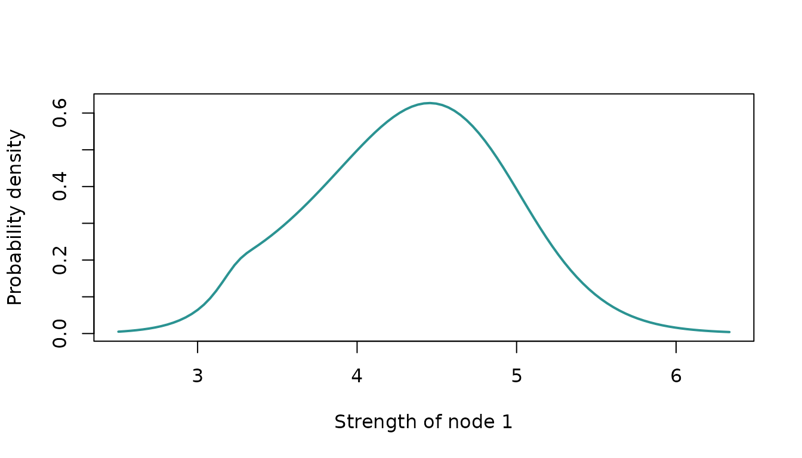
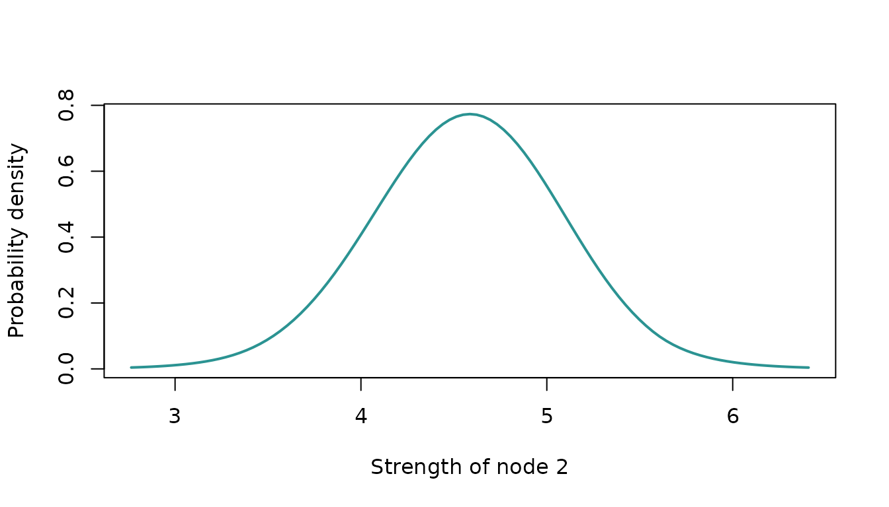
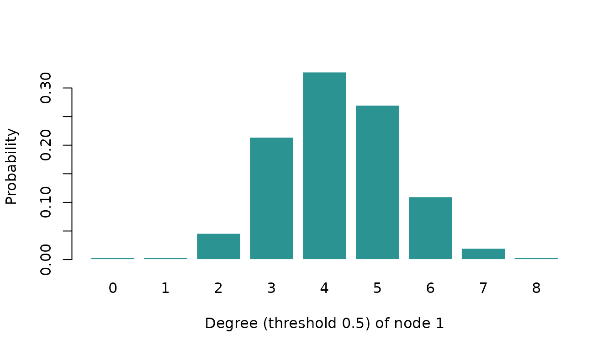
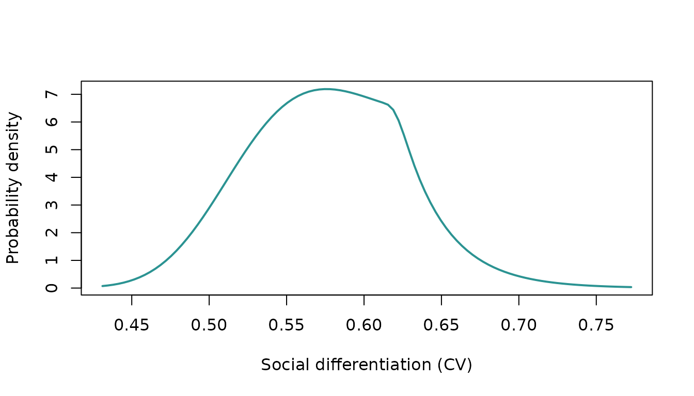

Network metrics summarise the structure of a network, either for each individual (node metrics) or for the whole network (global metrics). The edge model gives a posterior distribution for each edge weight, and each sample from it (a posterior draw) is one possible network that is consistent with the data. bisonR calculates a metric for each posterior draw, which gives a posterior distribution for the metric.
library(bisonR)
sim_data <- simulate_bison_model("binary", aggregated = TRUE)
fit_edge <- bison_model(
(event | effort) ~ dyad(node_1_id, node_2_id),
data = sim_data$df_sim,
model_type = "binary_conjugate",
priors = get_default_priors("binary_conjugate")
)Extracting metrics
Metrics are calculated with
extract_metric(fit, metric_name). The name has two parts:
the target (edge, node or
global) and the metric, joined by an underscore,
such as node_strength or global_cv.
strength <- extract_metric(fit_edge, "node_strength", num_draws = 1000)
dim(strength)
#> [1] 1000 10The result has one row per posterior draw and one column per target: one column per node for node metrics (named after the nodes, in the order of the node levels), one per dyad for edge metrics, and a single column for global metrics. The columns can be summarised in the same way as any other posterior samples:
t(apply(strength, 2, quantile, probs = c(0.05, 0.5, 0.95)))
#> 5% 50% 95%
#> 1 3.251381 4.345390 5.363105
#> 2 3.676587 4.565101 5.447701
#> 3 3.343305 4.361036 5.367084
#> 4 3.584986 4.528936 5.450037
#> 5 2.909792 3.933265 4.889573
#> 6 2.602736 3.599878 4.664193
#> 7 3.773139 4.750287 5.680407
#> 8 2.389676 3.293668 4.268710
#> 9 3.266363 4.260105 5.171311
#> 10 2.928467 3.888107 4.977658plot_metric() plots the posterior distribution of a
metric. Continuous metrics are shown as densities, and discrete metrics,
such as degree, as bar charts (see the examples below):
plot_metric(strength[, 1:2], "Strength of node")

To use metrics in a regression, use bison_brm() (see
vignette("bison_brms")) rather than summarising them first
(for example as posterior means), so that the uncertainty in the metric
is included in the regression.
Weighted and thresholded metrics
Unless stated otherwise, all metrics are calculated on the
weighted network, using edge weights on the natural
scale (probabilities for binary models, rates for count models). For
example, node_strength is the weighted version of
degree.
Some metrics are only defined for networks where edges are either
present or absent. These take a threshold in square
brackets, such as node_degree[0.2]: in each posterior draw,
edges with a weight at or above the threshold count as present and the
rest as absent. For an unweighted version of a weighted metric (such as
unweighted density), threshold the network in the same way. Results can
depend on the threshold, so check whether conclusions change with
different values.
Available metrics
Edge metrics
| Name | Definition |
|---|---|
edge_weight |
The edge weight of each dyad. On the natural scale by default; use
transform = FALSE for the link scale (logit, or log-odds,
for binary models and log for count models). |
Node metrics
| Name | Definition |
|---|---|
node_strength |
Sum of the weights of the node’s edges. How much a node associates in total. |
node_degree[t] |
Number of edges with weight at or above t. |
node_eigen |
Eigenvector centrality: high when a node has strong edges to nodes that are themselves central. Scaled so the most central node has a value of 1. |
node_betweenness |
Betweenness: the number of shortest paths between other pairs of nodes that pass through the node, using 1/weight as the length of each edge (so strong edges are short). |
node_closeness |
Closeness: the inverse of the sum of shortest-path distances from the node to all other reachable nodes, using 1/weight as edge lengths. |
node_clustering[t] |
Local clustering coefficient of the network thresholded at
t: the proportion of pairs of the node’s associates that
are also associates of each other. Nodes with fewer than two associates
get 0. |
Global metrics
| Name | Definition |
|---|---|
global_density |
Mean edge weight across all dyads in the model (weighted density). |
global_cv |
Coefficient of variation (SD / mean) of edge weights, also called social differentiation. High values mean relationships vary a lot in strength. |
global_std |
Standard deviation of edge weights. |
global_diameter |
Length of the longest shortest path between any two nodes, using 1/weight as edge lengths. |
global_clustering[t] |
Global clustering coefficient (transitivity) of the network
thresholded at t: the proportion of connected triples that
are closed triangles. |
Global metrics are calculated only from the dyads in the model, so dyads that do not appear in the data are not included.
Examples
degree <- extract_metric(fit_edge, "node_degree[0.5]", num_draws = 500)
plot_metric(degree[, 1], "Degree (threshold 0.5) of node 1")
eigen <- extract_metric(fit_edge, "node_eigen", num_draws = 500)
round(apply(eigen, 2, median), 2)
#> 1 2 3 4 5 6 7 8 9 10
#> 0.87 0.92 0.85 0.88 0.78 0.70 0.93 0.66 0.83 0.78
cv <- extract_metric(fit_edge, "global_cv", num_draws = 1000)
plot_metric(cv, "Social differentiation (CV)")
clustering <- extract_metric(fit_edge, "global_clustering[0.3]", num_draws = 500)
quantile(clustering, c(0.05, 0.5, 0.95))
#> 5% 50% 95%
#> 0.5593220 0.6705882 0.7756352Using other network tools
For metrics that bisonR does not provide,
bison_to_igraph() returns a list of igraph
networks, one per posterior draw, with edge weights on the natural
scale. Calculating a metric for each network gives its posterior
distribution. For example, the mean shortest path length, using 1/weight
as the length of each edge:
nets <- bison_to_igraph(fit_edge, num_draws = 200)
mean_path_length <- sapply(nets, function(net) {
igraph::mean_distance(net, weights = 1 / igraph::E(net)$weight)
})
quantile(mean_path_length, c(0.05, 0.5, 0.95))
#> 5% 50% 95%
#> 1.966829 2.161690 2.411309Note that some igraph functions ignore edge weights (for example
igraph::assortativity()). Every dyad in the model is an
edge in every posterior network, so these functions give the same value
in every draw. Before applying a function to posterior networks, check
that it uses the weight edge attribute.